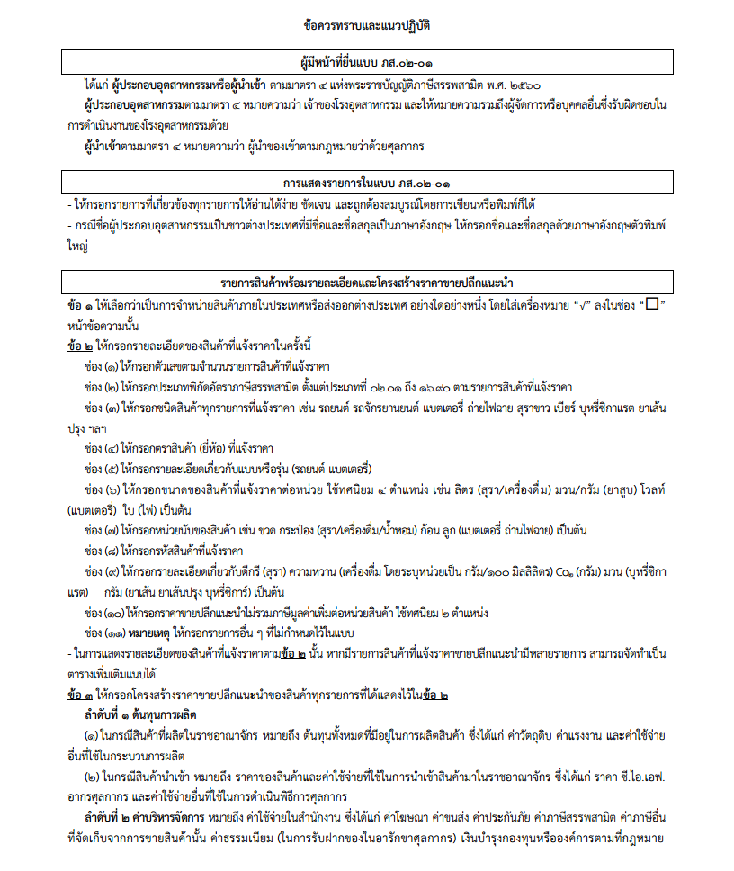
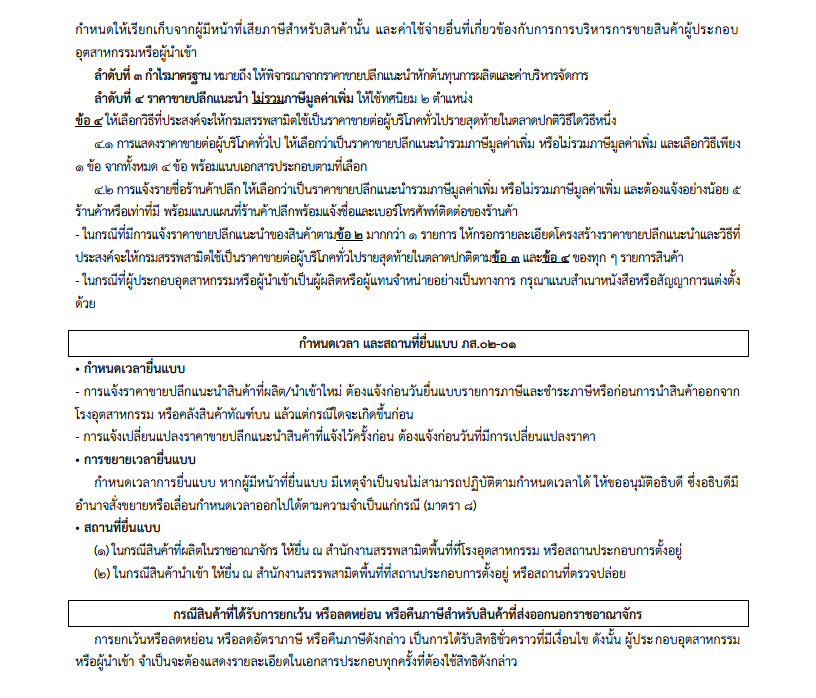
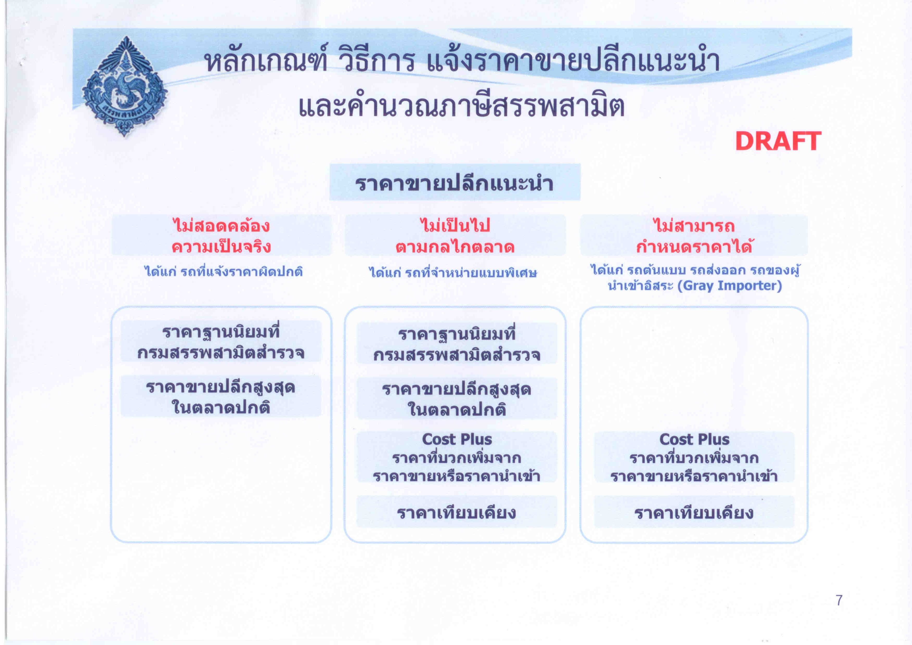

ภาษีสรรพสามิต

เนื้อหา
ภาษีสรรพสามิต คือ ภาษีที่จัดเก็บจากสินค้าและบริการซึ่งมีเหตุผลสมควรที่จะต้องรับภาระภาษีสูงกว่าปกติ เช่น บริโภคแล้วอาจก่อให้เกิดผลเสียต่อสุขภาพ และศีลธรรมอันดี มีลักษณะฟุ่มเฟือย และสินค้าและบริการที่ได้รับผลประโยชน์เป็นพิเศษจากกิจการของรัฐ เป็นต้น เพื่อเป็นรายได้ให้รัฐบาลนำไปบริหารประเทศ และทะนุบำรุงท้องถิ่นต่าง ๆ โดยอาศัยอำนาจตามกฎหมาย
สินค้าและบริการที่ต้องเสียภาษีสรรพสามิต
ตัวอย่างสินค้าและบริการที่ต้องเสียภาษีสรรพสามิต เช่น
- สุรา
- ยาสูบ
- ไพ่
- น้ำหอม หัวน้ำหอมและน้ำมันหอม
- แบตเตอรี่
- น้ำมันและผลิตภัณฑ์น้ำมัน
- เครื่องดื่ม
- เครื่องไฟฟ้า (เฉพาะเครื่องปรับอากาศและโคมระย้าที่ทำจากแก้วเลดคริสตัลและแก้ว- คริสตัลอี่น ๆ )
- แก้วเลดคริสตัล และแก้วคริสตัลอื่น ๆ
- รถยนต์ (รถยนต์นั่ง รถยนต์กระบะ รถยนต์โดยสารที่มีที่นั่งไม่เกิน 10 คน)
- เรือยอชต์และยานพาหนะทางน้ำที่ใช้เพื่อความสำราญ
- พรมและสิ่งทอปูพื้นอื่น (เฉพาะที่ทำด้วยขนสัตว์)
- รถจักรยานยนต์
- สถานบริการ (สนามแข่งม้า สนามกอล์ฟ) ฯลฯ
กฎหมาย / ประกาศ ที่สำคัญ
- พระราชบัญญัติภาษีสรรพสามิต พ.ศ. 2560
- คำอธิบายพระราชบัญญัติภาษีสรรพสามิต พ.ศ. 2560
- พระราชบัญญัติภาษีสรรพสามิต พ.ศ. 2560 (ภาษาอังกฤษ)
- หลักเกณฑ์ วิธีการ และเงื่อนไข ผ่อนผันการแจ้งราคาขายปลีกแนะนําและโครงสร้างราคาขายปลีกแนะนํา
- การปฏิบัติพิธีการศุลกากรนำเข้าทางอิเล็กทรอนิกส์สำหรับสินค้านำเข้าตามกฎหมายว่าด้วยภาษีสรรพสามิต
- การปฏิบัติพิธีการศุลกากรนำเข้าทางอิเล็กทรอนิกส์สำหรับสินค้านำเข้าที่กรมสรรพสามิตประกาศขยายกำหนดเวลาการปฏิบัติตามพระราชบัญญัติภาษีสรรพสามิต พ.ศ.2560
สืบค้นรหัสสินค้าสรรพสามิต
สืบค้นรหัสสินค้าสรรพสามิตสำหรับระบบแลกเปลี่ยนข้อมูลอิเล็กทรอนิกส์ตามชนิดสินค้า
| ชนิดสินค้า | ชื่อสินค้า |
|---|---|
| ตอนที่ 1 | สินค้าน้ำมันและผลิตภัณฑ์น้ำมัน |
| ตอนที่ 2 | สินค้าเครื่องดื่ม |
| ตอนที่ 3 | สินค้าเครื่องไฟฟ้า |
| ตอนที่ 4 | สินค้าแบตเตอรี่ |
| ตอนที่ 5 | สินค้าแก้วและเครื่องแก้ว |
| ตอนที่ 6 | สินค้ารถยนต์ |
| ตอนที่ 7 | สินค้ารถจักรยานยนต์ |
| ตอนที่ 8 | สินค้าเรือ |
| ตอนที่ 9 | สินค้าผลิตภัณฑ์เครื่องหอมและเครื่องสำอาง |
| ตอนที่ 10 | สินค้าพรมและสิ่งทอปูพื้น |
| ตอนที่ 11 | สินค้าหินอ่อนและหินแกรนิต |
| ตอนที่ 12 | สินค้าทำลายชั้นบรรยากาศโอโซน |
| ตอนที่ 13 | สินค้าสุรา |
| ตอนที่ 14 | สินค้ายาสูบ |
| ตอนที่ 15 | สินค้าไพ่ |
| ตอนที่ 16 | สินค้าอื่่น ๆ |
| ALL | ค้นหาทั้งหมด |
โครงสร้างราคาขายปลีกแนะนำ

ต้นทุนการผลิต
1.1 ในกรณีสินค้าที่ผลิตในราชอาณาจักร หมายถึง ต้นทุนทั้งหมดที่มีอยู่ในการผลิตสินค้า ซึ่งได้แก่ ค่าวัตถุดิบ ค่าแรงงาน และค่าใช้จ่ายอื่นที่ใช้ในกระบวนการผลิต 1.2 ในกรณีสินค้านำเข้า หมายถึง ราคาของสินค้าและค่าใช้จ่ายที่ใช้ในการนำเข้าสินค้ามาในราชอาณาจักร ซึ่งได้แก่ ราคา ซี.ไอ.เอฟ. อากรศุลกากร และค่าใช้จ่ายอื่นที่ใช้ในการดำเนินพิธีการศุลกากร
ค่าบริหารจัดการ หมายถึง ค่าใช้จ่ายในสำนักงาน ซึ่งได้แก่ ค่าโฆษณา ค่าขนส่ง ค่าประกันภัย ค่าภาษีสรรพสามิต ค่าภาษีอื่น ที่จัดเก็บจากการขายสินค้านั้น ค่าธรรมเนียม (ในการรับฝากของในอารักขาศุลกากร) เงินบำรุงกองทุนหรือองค์การตามที่กฎหมาย กำหนดให้เรียกเก็บจากผู้มีหน้าที่เสียภาษีสำหรับสินค้านั้น และค่าใช้จ่ายอื่นที่เกี่ยวข้องกับการการบริหารการขายสินค้าผู้ประกอบอุตสาหกรรมหรือผู้นำเข้า
กำไรมาตรฐาน หมายถึง ให้พิจารณาจากราคาขายปลีกแนะนำหักต้นทุนการผลิตและค่าบริหารจัดการ
ข้อควรทราบและแนวปฏิบัติ


ที่มา : กรมสรรพสามิต
ราคาขายปลีกแนะนำและการคำนวนภาษีสรรพสามิต

ตัวอย่างการคำนวณภาษี
การคำนวณภาษีสินค้าสรรพสามิต ในกรณีสินค้าทั่วไป (ยกเว้นสินค้าในหมวด สุรา ยาสูบ และเครื่องดื่ม) เมื่อกำหนดพิกัดสรรพสามิตและบันทึกข้อมูลตามปกติ โปรแกรมจะคำนวณภาษีสรรพสามิต และภาษีเพื่อมหาดไทยให้โดยอัตโนมัติ
กรณีเป็นสินค้าในหมวด สุรา ยาสูบ และเครื่องดื่ม เมื่อผู้ใช้งานกำหนดพิกัดสรรพสามิตถูกต้อง ต้องเข้าไปบันทึกรายละเอียดเพิ่มเติม ตามรายละเอียดของแต่ละหมวดสินค้ามีรายละเอียดดังนี้
สุรา


ยาสูบ


เครื่องดื่ม


เครื่องดื่มชนิดผง เกล็ด
- พิกัดอัตราภาษีสรรพสามิต สำหรับสินค้าเครื่องดื่มชนิดผง เกล็ด หรือเครื่องดื่มเข้มข้น ตามพระราชกฤษฎีกากำหนดประเภทสินค้าตามพิกัดอัตราภาษีสรรพสามิต พ.ศ. 2560 คือ
16.90(1) ผลิตภัณฑ์ที่ใช้เป็นเครื่องดื่มที่มีลักษณะผง เกล็ด หรือเครื่องดื่มเข้มข้นที่มีส่วนผสมของน้ำตาลและสามารถละลายน้ำได้ แต่ไม่รวมถึงผลิตภัณฑ์เสริมอาหารและผลิตภัณฑ์นมที่อยู่ในรูปแบบผงตามกฎหมายว่าด้วยอาหาร
- ในช่อง “ปริมาณตามข้อแนะนำ” ให้ใส่ข้อมูล “ปริมาตรหรือน้ำหนักของผงหรือเกล็ดเครื่องดื่มที่ใช้ในการชงแต่ละครั้งตามข้อแนะนำ” ที่ระบุไว้ข้างภาชนะบรรจุภัณฑ์
- ในกรณีที่เครื่องดื่มผงหรือเกล็ดบรรจุอยู่ในซองแบบชงเครื่องดื่มหนึ่งแก้วต่อหนึ่งซอง น้ำหนัก (ปริมาณ) ผงหรือเกล็ดตามข้อแนะนำ เท่ากับ น้ำหนักสุทธิ เช่น 1 ซอง (17.5 กรัม)
- ในช่อง “ปริมาตรหลังผสม” ให้ใส่ข้อมูล “ปริมาตรของน้ำหรือของเหลวที่ใช้ผสมกับเครื่องดื่มผงหรือเกล็ดตามคำแนะนำหรือวิธีการชง” ที่ระบุไว้ที่ข้างภาชนะบรรจุภัณฑ์ เช่น 130 มล./แก้ว
- ในช่อง “น้ำหนัก/ภาชนะ(กรัม)” ให้ใส่ข้อมูล “น้ำหนัก (ปริมาณ) ของผงหรือเกล็ดเครื่องดื่มสุทธิต่อภาชนะ” ที่ระบุไว้ที่ภาชนะบรรจุภัณฑ์
- ในช่อง “จำนวนภาชนะ” ให้ใส่ข้อมูล “จำนวนภาชนะทั้งหมด”
- หากข้างขวดหรือที่ฉลากไม่ได้แจ้งข้อมูลใด ๆ ก็ตามข้างต้น ให้ผู้ประกอบอุตสาหกรรมเป็นผู้แจ้งสำแดงข้อมูลของตนเองให้ครบถ้วน เพื่อประกอบการพิจารณาคำนวณภาษีสรรพสามิต
- ภาษีสรรพสามิตต่อภาชนะบรรจุดังกล่าวที่ตารางคำนวณออกมาได้นั้น เป็นภาษีสรรพสามิตแต่เพียงอย่างเดียวเท่านั้น ยังไม่ได้รวมภาษีเพิ่มขึ้นเพื่อราชการส่วนท้องถิ่น
- หลักเกณฑ์และวิธีการคำนวณดังกล่าวข้างต้นเป็นไปตามหนังสือสำนักแผนภาษี ด่วนที่สุดที่ กค 0619/1288 ลงวันที่ 2 พฤศจิกายน 2560


เครื่องดื่มเข้มข้น
- พิกัดอัตราภาษีสรรพสามิต สำหรับสินค้าเครื่องดื่มชนิดผง เกล็ด หรือเครื่องดื่มเข้มข้น ตามพระราชกฤษฎีกากำหนดประเภทสินค้าตามพิกัดอัตราภาษีสรรพสามิต พ.ศ. 2560 คือ
16.90(1) ผลิตภัณฑ์ที่ใช้เป็นเครื่องดื่มที่มีลักษณะผง เกล็ด หรือเครื่องดื่มเข้มข้นที่มีส่วนผสมของน้ำตาลและสามารถละลายน้ำได้ แต่ไม่รวมถึงผลิตภัณฑ์เสริมอาหารและผลิตภัณฑ์นมที่อยู่ในรูปแบบผงตามกฎหมายว่าด้วยอาหาร
- ในช่อง “ปริมาณตามข้อแนะนำ” ให้ใส่ข้อมูล “ปริมาตรหรือน้ำหนักของผงหรือเกล็ดเครื่องดื่มที่ใช้ในการชงแต่ละครั้งตามข้อแนะนำ” ที่ระบุไว้ข้างภาชนะบรรจุภัณฑ์
- ในกรณีที่เครื่องดื่มผงหรือเกล็ดบรรจุอยู่ในซองแบบชงเครื่องดื่มหนึ่งแก้วต่อหนึ่งซอง น้ำหนัก (ปริมาณ) ผงหรือเกล็ดตามข้อแนะนำ เท่ากับ น้ำหนักสุทธิ เช่น 1 ซอง (17.5 กรัม)
- ในช่อง “ปริมาตรหลังผสม” ให้ใส่ข้อมูล “ปริมาตรของน้ำหรือของเหลวที่ใช้ผสมกับเครื่องดื่มผงหรือเกล็ดตามคำแนะนำหรือวิธีการชง” ที่ระบุไว้ที่ข้างภาชนะบรรจุภัณฑ์ เช่น 130 มล./แก้ว
- ในช่อง “น้ำหนัก/ภาชนะ(กรัม)” ให้ใส่ข้อมูล “น้ำหนัก (ปริมาณ) ของผงหรือเกล็ดเครื่องดื่มสุทธิต่อภาชนะ” ที่ระบุไว้ที่ภาชนะบรรจุภัณฑ์
- ในช่อง “จำนวนภาชนะ” ให้ใส่ข้อมูล “จำนวนภาชนะทั้งหมด”
- หากข้างขวดหรือที่ฉลากไม่ได้แจ้งข้อมูลใด ๆ ก็ตามข้างต้น ให้ผู้ประกอบอุตสาหกรรมเป็นผู้แจ้งสำแดงข้อมูลของตนเองให้ครบถ้วน เพื่อประกอบการพิจารณาคำนวณภาษีสรรพสามิต
- ภาษีสรรพสามิตต่อภาชนะบรรจุดังกล่าวที่ตารางคำนวณออกมาได้นั้น เป็นภาษีสรรพสามิตแต่เพียงอย่างเดียวเท่านั้น ยังไม่ได้รวมภาษีเพิ่มขึ้นเพื่อราชการส่วนท้องถิ่น
- หลักเกณฑ์และวิธีการคำนวณดังกล่าวข้างต้นเป็นไปตามหนังสือสำนักแผนภาษี ด่วนที่สุดที่ กค 0619/1288 ลงวันที่ 2 พฤศจิกายน 2560


รถยนต์ รถจักรยานยนต์ แบตเตอรี่
การคำนวณภาษีรถยนต์ รถจักรยานยนต์ แบตเตอรี่ และผลิตภัณฑ์เครื่องหอมและเครื่องสำอาง เครื่องใช้ไฟฟ้า (โคมระย้า) แก้วและเครื่องแก้ว พรมและสื่งทอปูพื้นอื่น ๆ


น้ำมันและผลิตภัณฑ์น้ำมัน
การคำนวณภาษีสินค้าที่จัดเก็บภาษีตามปริมาณเพียงอย่างเดียว ได้แก่ น้ำมันและผลิตภัณฑ์น้ำมันทุกพิกัด และไพ่


การระบุ EXEMPT
การระบุ EXEMPT กรณีของที่นำเข้าคลังทัณฑ์บน เขตปลอดอากร เขตประกอบการเสรี และของที่ได้รับยกเว้นอากรตามภาค 4 รวมทั้งของที่โอนย้ายระหว่างคลังสินค้าทัณฑ์บน เขตปลอดอากร เขตประกอบการเสรี

ประกาศกรมสรรพสามิต แยกตามประเภทสินค้าและบริการ
ประกาศกรมสรรพสามิตที่ออกตามความในกฎกระทรวงกำหนดพิกัดอัตราภาษีสรรพสามิต พ.ศ. 2560 และที่แก้ไขเพิ่มเติม รวมถึงประกาศ/ระเบียบ/คำสั่งอื่น ๆ ที่เกี่ยวข้อง แยกตามประเภทสินค้าและบริการ
1. สินค้าน้ำมันและผลิตภัณฑ์น้ำมัน
- ประกาศกรมสรรพสามิต เรื่อง กำหนดหลักเกณฑ์และเงื่อนไข สำหรับน้ำมันแก๊สโซฮอลล์ และน้ำมันดีเซลที่มีไบโอดีเซลผสม
- ประกาศกรมสรรพสามิต เรื่อง หลักเกณฑ์ และเงื่อนไขการเสียภาษีในอัตราศูนย์สำหรับน้ำมันเชื้อเพลิง เครื่องบินไอพ่นที่นำไปใช้เป็นเชื้อเพลิงสำหรับอากาศยานไปต่างประเทศ
- ประกาศกรมสรรพสามิต เรื่อง หลักเกณฑ์ และเงื่อนไขการเสียภาษีในอัตราศูนย์สำหรับน้ำมันดีเซล ที่นำไปจำหน่ายในเขตต่อเนื่องของราชอาณาจักร
- ประกาศกรมสรรพสามิต เรื่อง หลักเกณฑ์ และเงื่อนไขการเสียภาษีในอัตราศูนย์สำหรับน้ำมันดีเซลที่ใช้ เป็นเชื้อเพลิงในเรือเดินทางไปกลับ ในเขตพื้นที่พัฒนาร่วมไทย-มาเลเซีย
- ประกาศกรมสรรพสามิต เรื่อง หลักเกณฑ์ วิธีการ และเงื่อนไข การเสียภาษีในอัตราศูนย์สำหรับ ก๊าซปิโตรเลียมเหลว (แอล.พี.จี.) ก๊าซโพรเพน และก๊าซที่คล้ายกันที่ใช้ในการผลิตกระแสไฟฟ้าและขายไฟฟ้าทั้งหมดให้แก่การไฟฟ้าฝ่ายผลิตแห่งประเทศไทย
- ประกาศกรมสรรพสามิต เรื่อง กำหนดหลักเกณฑ์ วิธีการ และเงื่อนไข ในการใช้ผลิตภัณฑ์ที่เป็นของผสมปิทูเมนเป็นเชื้อเพลิง ในการผลิตกระแสไฟฟ้าและขายไฟฟ้าทั้งหมดให้แก่การไฟฟ้าฝ่ายผลิตแห่งประเทศไทย
- ประกาศกรมสรรพสามิต เรื่อง กำหนดคุณสมบัติสารละลายประเภทไฮโดรคาร์บอน (Hydrocarbon Solvent) และน้ำมันหล่อลื่น และน้ำมันที่คล้ายกัน
- ประกาศกรมสรรพสามิต เรื่อง หลักเกณฑ์ วิธีการ และเงื่อนไข การเสียภาษีในอัตราศูนย์สำหรับสารละลายประเภทไฮโดรคาร์บอน (Hydrocarbon Solvent) ที่นำไปใช้ในอุตสาหกรรมต่างๆ พ.ศ. 2560
- ประกาศกรมสรรพสามิต เรื่อง กำหนดคุณสมบัติสำหรับน้ำมันหล่อลื่น และน้ำมันที่คล้ายกันที่ใช้แล้ว
- ประกาศกรมสรรพสามิต เรื่อง หลักเกณฑ์และเงื่อนไขการเสียภาษีในอัตราศูนย์สำหรับน้ำมันหล่อลื่นและน้ำมันที่คล้ายกัน ที่ผลิตจากน้ำมันหล่อลื่น และน้ำมันที่คล้ายกันที่ใช้แล้ว
- ประกาศกรมสรรพสามิต เรื่อง หลักเกณฑ์และเงื่อนไขการเสียภาษีในอัตราศูนย์สำหรับน้ำมันหล่อลื่นและน้ำมันที่คล้ายกัน ที่นำไปใช้เป็นวัตถุดิบในการผลิตสิ่งของอื่น
- ประกาศกรมสรรพสามิต เรื่อง หลักเกณฑ์ วิธีการ และเงื่อนไขการเสียภาษีในอัตราศูนย์สำหรับน้ำมันและผลิตภัณฑ์น้ำมันที่ผลิตได้และนำไปใช้ในขบวนการผลิตภายในโรงอุตสาหกรรม
- ประกาศกรมสรรพสามิต เรื่อง หลักเกณฑ์ วิธีการ และเงื่อนไขการเสียภาษีในอัตราศูนย์สำหรับน้ำมันและผลิตภัณฑ์น้ำมันทีนำไปใช้เป็นวัตถุดิบหรือส่วนประกอบในการผลิตในโรงอุตสาหกรรมน้ำมันและผลิตภัณฑ์น้ำมัน
- ประกาศกรมสรรพสามิต เรื่อง กำหนดเขตปลอดภาษีสรรพสามิต
2. สินค้าเครื่องดื่ม
- ประกาศกรมสรรพสามิต เรื่อง หลักเกณฑ์ วิธีการ และเงื่อนไขในการตรวจวัดปริมาณน้ำตาล
- ประกาศกรมสรรพสามิต เรื่อง หลักเกณฑ์ วิธีการ และเงื่อนไขการเสียภาษีในอัตราตามมูลค่าสำหรับเครื่องดื่มอื่น ๆ ที่มีการเติมสารอาหารหรือสารอื่น
- ประกาศกรมสรรพสามิต เรื่อง หลักเกณฑ์ วิธีการ และเงื่อนไขการเสียภาษีในอัตราตามมูลค่าร้อยละศูนย์ สำหรับเครื่องดื่มประเภทน้ำผลไม้และน้ำพืชผัก พ.ศ. 2560
- ประกาศกรมสรรพสามิต เรื่อง หลักเกณฑ์ วิธีการ และเงื่อนไขการเสียภาษีในอัตราตามมูลค่าร้อยละศูนย์ สำหรับเครื่องดื่มประเภทน้ำผลไม้และน้ำพืชผัก พ.ศ. 2560 (ฉบับที่ -
- ประกาศกรมสรรพสามิต เรื่อง หลักเกณฑ์ วิธีการ และเงื่อนไขการเสียภาษีในอัตราตามมูลค่าร้อยละศูนย์ สำหรับเครื่องดื่มประเภทน้ำผลไม้และน้ำพืชผัก พ.ศ. 2560 (ฉบับที่ -
- ประกาศกรมสรรพสามิต เรื่อง หลักเกณฑ์ วิธีการ และเงื่อนไขการเสียภาษีในอัตราตามมูลค่าร้อยละศูนย์สำหรับเครื่องดื่มประเภทน้ำผลไม้และน้ำพืชผัก
- ประกาศกรมสรรพสามิต เรื่อง หลักเกณฑ์ วิธีการ และเงื่อนไขการเสียภาษีในอัตราตามมูลค่าร้อยละศูนย์สำหรับเครื่องดื่มประเภทน้ำผลไม้และน้ำพืชผัก (ฉบับที่ -
- ประกาศกรมสรรพสามิต เรื่อง หลักเกณฑ์ วิธีการ และเงื่อนไขการเสียภาษีในอัตราตามมูลค่าสำหรับเครื่องดื่มประเภทน้ำผลไม้และน้ำพืชผักที่มีการเติมสารอาหารหรือสารอื่น
3. สินค้าเครื่องใช้ไฟฟ้า
4. สินค้าแบตเตอรี่
5. สินค้าแก้วและเครื่องแก้ว
6. สินค้ารถยนต์
- ประกาศกรมสรรพสามิต เรื่อง กำหนดหลักเกณฑ์ และเงื่อนไขของรถยนต์นั่ง
- ประกาศกรมสรรพสามิต เรื่อง กำหนดหลักเกณฑ์ เงื่อนไข และคุณลักษณะของรถยนต์นั่งกึ่งบรรทุก (Pick-up Passenger Vehicle : PPV)
- ประกาศกรมสรรพสามิต เรื่อง กำหนดหลักเกณฑ์ และเงื่อนไขของรถยนต์นั่งกึ่งบรรทุก (Pick-up Passenger Vehicle : PPV) และรถยนต์กระบะสี่ประตู (Double Cab) แบบผสมที่ใช้พลังงานเชื้อเพลิงและไฟฟ้า (Hybrid Electric Vehicle)
- ประกาศกรมสรรพสามิต เรื่อง กำหนดหลักเกณฑ์ เงื่อนไข และคุณลักษณะของรถยนต์นั่งที่ผลิตจากรถยนต์กระบะหรือแชสซีส์และกระจกบังลมหน้า (Chassis with Windshield) ของรถยนต์กระบะหรือดัดแปลงมาจากรถยนต์กระบะ
- ประกาศกรมสรรพสามิต เรื่อง กำหนดหลักเกณฑ์ เงื่อนไข และคุณลักษณะของรถยนต์นั่งที่ผลิตจากรถยนต์กระบะหรือแชสซีส์และกระจกบังลมหน้า (Chassis with Windshield) ของรถยนต์กระบะหรือดัดแปลงมาจากรถยนต์กระบะ (ฉบับที่ -
- ประกาศกรมสรรพสามิต เรื่อง คุณสมบัติของผู้ประกอบอุตสาหกรรมซึ่งนำรถยนต์กระบะหรือแชสซีส์และกระจกบังลมหน้า (Chassis with Windshield) ของรถยนต์กระบะมาผลิตหรือนำรถยนต์กระบะมาดัดแปลงเป็นรถยนต์นั่ง
- ประกาศกรมสรรพสามิต เรื่อง มาตรฐานความปลอดภัยประเภทระบบความปลอดภัยเชิงป้องกันก่อนเกิดเหตุ (Active Safety)
(- คำสั่งกรมสรรพสามิต ที่ 510⁄2560 เรื่อง แนวทางปฏิบัติตามหลักเกณฑ์และเงื่อนไขของรถยนต์และมาตรฐานความปลอดภัยประเภทระบบความปลอดภัยเชิงป้องกันก่อนเกิดเหตุ (Active Safety) - ประกาศกรมสรรพสามิต เรื่อง กำหนดหลักเกณฑ์ เงื่อนไข และคุณลักษณะของรถยนต์โดยสารที่มีที่นั่งไม่เกิน 10 คน
- ประกาศกรมสรรพสามิต เรื่อง หลักเกณฑ์และเงื่อนไขในการเสียภาษีอัตราศูนย์ของรถยนต์นั่งหรือรถยนต์โดยสารที่มีที่นั่งไม่เกิน 10 คน ที่ใช้เป็นรถพยาบาล
- ประกาศกรมสรรพสามิต เรื่อง หลักเกณฑ์ วิธีการ และเงื่อนไขในการเสียภาษีอัตราศูนย์สำหรับรถยนต์ หรือรถจักรยานยนต์ต้นแบบที่นำไปวิจัย พัฒนา หรือทดสอบสมรรถนะ
- ประกาศกรมสรรพสามิต เรื่อง หลักเกณฑ์ วิธีการ และเงื่อนไขในการเสียภาษีอัตราศูนย์สำหรับรถยนต์ หรือรถจักรยานยนต์ต้นแบบที่นำไปวิจัย พัฒนา หรือทดสอบสมรรถนะ
- ประกาศกรมสรรพสามิต เรื่อง กำหนดหลักเกณฑ์ และเงื่อนไขของรถยนต์นั่งหรือรถยนต์โดยสารที่มีที่นั่งไม่เกิน 10 คน ประเภทประหยัดพลังงาน แบบผสมที่ใช้พลังงานเชื้อเพลิงและไฟฟ้า (Hybrid Electric Vehicle)
- ประกาศกรมสรรพสามิต เรื่อง หลักเกณฑ์ วิธีการ และเงื่อนไขในการเสียภาษีอัตราศูนย์สำหรับรถยนต์ หรือรถจักรยานยนต์ต้นแบบที่นำไปวิจัย พัฒนา หรือทดสอบสมรรถนะ
- ประกาศกรมสรรพสามิต เรื่อง กำหนดหลักเกณฑ์ และเงื่อนไขของรถยนต์นั่งหรือรถยนต์โดยสารที่มีที่นั่งไม่เกิน 10 คน ประเภทประหยัดพลังงาน แบบผสมที่ใช้พลังงานเชื้อเพลิงและไฟฟ้า (Hybrid Electric Vehicle) (ฉบับที่ -
- ประกาศกรมสรรพสามิต เรื่อง กำหนดหลักเกณฑ์ และเงื่อนไข ของรถยนต์นั่งหรือรถยนต์โดยสารที่มีที่นั่งไม่เกิน 10 คน ประเภทประหยัดพลังงาน แบบผสมที่ใช้พลังงานเชื้อเพลิงและไฟฟ้า (Hybrid Electric Vehicle) และแบบพลังงานไฟฟ้า (Electric Powered Vehicle)
- ประกาศกรมสรรพสามิต เรื่อง กำหนดหลักเกณฑ์และเงื่อนไขของรถยนต์ประหยัดพลังงานมาตรฐานสากล
- ประกาศกรมสรรพสามิต เรื่อง กำหนดหลักเกณฑ์ เงื่อนไข และคุณลักษณะของรถยนต์นั่งหรือรถยนต์โดยสารที่มีที่นั่งไม่เกิน 10 คน ประเภทใช้เชื้อเพลิงทดแทน
- ประกาศกรมสรรพสามิต เรื่อง กำหนดหลักเกณฑ์ เงื่อนไข และคุณลักษณะของรถยนต์กระบะที่ออกแบบสำหรับให้มีน้ำหนักรถรวมน้ำหนักบรรทุกไม่เกิน 4,000 กิโลกรัม ที่ไม่มีพื้นที่ใส่สัมภาระด้านหลังที่นั่งคนขับ (No Cab)
- ประกาศกรมสรรพสามิต เรื่อง กำหนดหลักเกณฑ์ เงื่อนไข และคุณลักษณะของรถยนต์กระบะที่ออกแบบสำหรับให้มีน้ำหนักรถรวมน้ำหนักบรรทุกไม่เกิน 4,000 กิโลกรัม ที่มีพื้นที่ใส่สัมภาระด้านหลังที่นั่งคนขับ (Space Cab)
- ประกาศกรมสรรพสามิต เรื่อง กำหนดหลักเกณฑ์ เงื่อนไข และคุณลักษณะของรถยนต์กระบะสี่ประตู (Double Cab)
- ประกาศกรมสรรพสามิต เรื่อง กำหนดหลักเกณฑ์ และเงื่อนไขของรถยนต์กระบะที่ออกแบบสำหรับให้มีน้ำหนักรถรวมน้ำหนักบรรทุกไม่เกิน 4,000 กิโลกรัม ที่มีความจุของกระบอกสูบไม่เกิน 3,250 ลูกบาศก์เซนติเมตร
7. สินค้ารถจักรยานยนต์
- ประกาศกรมสรรพสามิต เรื่อง กำหนดหลักเกณฑ์ และเงื่อนไขของรถจักรยานยนต์แบบที่ใช้พลังงานเชื้อเพลิง หรือแบบผสมที่ใช้พลังงานเชื้อเพลิงและไฟฟ้า
- ประกาศกรมสรรพสามิต เรื่อง หลักเกณฑ์ วิธีการ และเงื่อนไขในการเสียภาษีอัตราศูนย์สำหรับรถยนต์ หรือรถจักรยานยนต์ต้นแบบที่นำไปวิจัย พัฒนา หรือทดสอบสมรรถนะ
8. สินค้าเรือ
9. สินค้าผลิตภัณฑ์เครื่องหอมและเครื่องสำอาง
10. สินค้าพรมและสิ่งทอปูพื้นอื่น ๆ
11. สินค้าหินอ่อนและหินแกรนิต
12. สินค้าสารทำลายชั้นบรรยากาศ
13. สินค้าสุรา
- ประกาศกรมสรรพสามิต เรื่อง หลักเกณฑ์ วิธีการ และเงื่อนไขการขอใช้สิทธิในอัตราภาษีศูนย์สำหรับสุราสามทับที่นำไปใช้ในการอุตสาหกรรม
- ประกาศกรมสรรพสามิต เรื่อง หลักเกณฑ์ วิธีการ และเงื่อนไขการขอใช้สิทธิในอัตราภาษีศูนย์ สำหรับสุราสามทับที่นำไปใช้ในการแพทย์ เภสัชกรรมหรือวิทยาศาสตร์
- ประกาศกรมสรรพสามิต เรื่อง หลักเกณฑ์ วิธีการ และเงื่อนไขการขอใช้สิทธิในอัตราภาษีศูนย์ สำหรับสุราสามทับที่นำไปทำการแปลงสภาพ
- ประกาศกรมสรรพสามิต เรื่อง หลักเกณฑ์ วิธีการ และเงื่อนไขการขอใช้สิทธิ์เสียภาษีในอัตราภาษีศูนย์สำหรับสุราสามทับ ที่นำไปทำการแปลงสภาพ เพื่อใช้ในการผลิตผลิตภัณฑ์ทำความสะอาดมือ ที่มีแอลกอฮอล์เป็นส่วนประกอบที่มิได้ทำขึ้นเพื่อการจำหน่าย
- ประกาศกรมสรรพสามิต เรื่อง หลักเกณฑ์ วิธีการ และเงื่อนไขการขอใช้สิทธิเสียภาษีในอัตราภาษีศูนย์สำหรับสุราสามทับที่นำไปทำการแปลงสภาพ เพื่อใช้ในการผลิตผลิตภัณฑ์ทำความสะอาดมือที่มีแอลกอฮอล์เป็นส่วนประกอบเพื่อขาย
14. สินค้ายาสูบ
- ประกาศกรมสรรพสามิต เรื่อง หลักเกณฑ์ วิธีการ และเงื่อนไขการเสียภาษีในอัตราศูนย์ สำหรับยาเส้นที่ผลิตเพื่อขายเป็นวัตถุดิบให้แก่ผู้ประกอบอุตสาหกรรมยาสูบ
- ประกาศกรมสรรพสามิต เรื่อง หลักเกณฑ์ วิธีการ และเงื่อนไขการเสียภาษีสำหรับยาเส้นอื่นนอกจากยาเส้นที่ผลิตเพื่อขายเป็นวัตถุดิบให้แก่ผู้ประกอบอุตสาหกรรมยาสูบ ปริมาณไม่เกิน 12,000 กิโลกรัมต่อปี
15. สินค้าไพ่
16. สินค้าผลิตภัณฑ์ที่ใช้เป็นเครื่องดื่มที่มีลักษณะผง เกล็ด หรือเครื่องดื่มเข้มข้น
17. กิจการบันเทิงหรือหย่อนใจ
- ประกาศกรมสรรพสามิต เรื่อง หลักเกณฑ์ วิธีการ และเงือนไขสำหรับรายรับของสถานที่สำหรับดื่มกินและจัดให้มีการแสดงดนตรีหรือการแสดงอื่นใดเพื่อการบันเทิง
- ประกาศกรมสรรพสามิต เรื่อง หลักเกณฑ์ และเงื่อนไขการเสียภาษีในอัตราศูนย์สำหรับสถานบริการ ประเภทอาบน้ำหรืออบตัว และนวด ในสถานบริหารเสริมความงามหรือเพื่อสุขภาพ
18. กิจการเสี่ยงโชค
19. กิจการที่มีผลกระทบต่อสิ่งแวดล้อม
20. กิจการที่ได้รับอนุญาตหรือสัมปทานจากรัฐ
ที่มา :กรมสรรพสามิต . วันที่ปรับปรุงล่าสุด : 13 มีนาคม 2563
คู่มือสำหรับประชาชนของกรมสรรพสามิต
คู่มือสำหรับประชาชนของกรมสรรพสามิต ตามพระราชบัญญัติภาษีสรรพสามิต พ.ศ. 2560 (6 งาน 65 กระบวนงาน)
1. งานจดทะเบียน
- กระบวนงานที่ 1 การจดทะเบียน การเปลี่ยนแปลงข้อมูลที่จดทะเบียนแล้ว และการขอรับใบแทนใบทะเบียนสรรพสามิต
- กระบวนงานที่ 2 การขอย้าย/เลิก/โอน กิจการ
2. งานชำระภาษี
- กระบวนงานที่ 3 การขออนุญาตนำสินค้าออกหรือกลับคืนโรงอุตสาหกรรม คลังสินค้าทัณฑ์บน หรือสถานที่อื่น (มาตรา 26 (1)(2) มาตรา 50 วรรคสอง (1) และมาตรา 103 วรรคสอง)
- กระบวนงานที่ 4 การขอนำรถยนต์ออกจากโรงอุตสาหกรรมหรือคลังสินค้าทัณฑ์บนเพื่อทดสอบประสิทธิภาพในระหว่างขั้นตอนการผลิต
- กระบวนงานที่ 5 การขออนุญาต การขอใบแทนใบอนุญาต และการขอเลิก สถานแสดงรถยนต์เพื่อขาย
- กระบวนงานที่ 6 การขอใบอนุญาตตั้ง ขอรับใบแทนใบอนุญาต ขอโอน และขอเลิกกิจการ คลังสินค้าทัณฑ์บน
- กระบวนงานที่ 7 การขอชำระภาษีสรรพสามิตกรณีดัดแปลงรถยนต์
- กระบวนงานที่ 8 การขอชำระภาษีภายในวันที่สิบห้าของเดือนถัดจากเดือนที่นำสินค้าออกจากโรงอุตสาหกรรมหรือคลังสินค้าทัณฑ์บนโดยมีหลักประกัน
3. งานคืน ยกเว้น และลดหย่อนภาษี
- กระบวนงานที่ 9 การขออนุมัติลดหย่อนภาษีสรรพสามิต
- กระบวนงานที่ 10 การยกเว้นหรือคืนภาษีสำหรับสินค้าที่ส่งออกไปนอกราชอาณาจักรหรือนำเข้าไปในเขตปลอดอากร
- กระบวนงานที่ 11 การยกเว้นภาษีสำหรับสินค้าที่นำไปเก็บไว้ ณ สถานที่เก็บสินค เพื่อรอการส่งออกไปนอกราชอาณาจักรหรือนำเข้าไปในเขตปลอดอากร ตามมาตรา 103 และการยกเว้นภาษีน้ำมันและผลิตภัณฑ์น้ำมันที่นำไปเก็บไว้ ณ สถานที่เก็บสินค้าเพื่อรอนำไปใช้เติมเรือไปต่างประเทศ ตามมาตรา 107 (4)
- กระบวนงานที่ 12 การขอยกเว้นภาษีสำหรับสินค้าที่นำไปใช้เป็นวัตถุดิบ หรือส่วนประกอบในการผลิตสินค้า
- กระบวนงานที่ 13 การยกเว้นหรือคืนภาษีสำหรับสินค้าบริจาค ตามมาตรา 107 (1) และ (2)
- กระบวนงานที่ 14 การยกเว้นหรือคืนภาษีสำหรับสินค้าที่จำหน่ายให้แก่ผู้ได้รับเอกสิทธิ์ ตามมาตรา 107 (3)
- กระบวนงานที่ 15 การยกเว้นภาษีสำหรับสุรากลั่นชนิดเอทานอลที่นำไปใช้เป็นวัตถุดิบหรือส่วนประกอบในการผลิตน้ำมันเชื้อเพลิงเพื่อใช้เป็นเชื้อเพลิง
- กระบวนงานที่ 16 การยกเว้นหรือคืนภาษีสำหรับน้ำมันและผลิตภัณฑ์น้ำมันที่เติมในอากาศยานหรือเรือที่มีขนาดเกินกว่าห้าร้อยตันกรอสส์ ตามมาตรา 107 (4)
- กระบวนงานที่ 17 การขอเสียภาษีในอัตราศูนย์สำหรับน้ำมันดีเซลที่นำไปจำหน่ายในเขตต่อเนื่องของราชอาณาจักร
- กระบวนงานที่ 18 การขอเสียภาษีในอัตราศูนย์สำหรับน้ำมันเชื้อเพลิงเครื่องบินไอพ่นที่นำไปใช้เป็นเชื้อเพลิงสำหรับอากาศยานไปต่างประเทศ
- กระบวนงานที่ 19 การขอเสียภาษีในอัตราศูนย์สำหรับน้ำมันและลิตภัณฑ์น้ำมันที่นำไปใช้เป็นวัตถุดิบหรือส่วนประกอบในการผลิตในโรงอุตสาหกรรมน้ำมันและผลิตภัณฑ์น้ำมัน
- กระบวนงานที่ 20 การขอเสียภาษีอัตราศูนย์สำหรับรถยนต์นั่งหรือรถยนต์โดยสารที่มีที่นั่ง ไม่เกิน 10 คนที่ใช้เป็นรถพยาบาล
- กระบวนงานที่ 21 การขอคืนภาษี สำหรับสินค้าที่พิสูจน์ได้ว่าเสียหายหรือเสื่อมคุณภาพจนใช้การไม่ได้
- กระบวนงานที่ 22 การขออนุมัติเป็นผู้วิจัย พัฒนา หรือทดสอบสมรรถนะรถยนต์หรือรถจักรยานยนต์ตันแบบ
- กระบวนงานที่ 23 การขอเสียภาษีอัตราศูนย์สำหรับรถยนต์หรือรถจักรยานยนต์ต้นแบบที่นำไปวิจัย พัฒนา หรือทดสอบสมรรถนะ
- กระบวนงานที่ 24 การขอทำลายรถยนต์หรือรถจักรยานยนต์ต้นแบบที่ใช้ในการวิจัย พัฒนา หรือทดสอบสมรรถนะ
- กระบวนงานที่ 25 การขออนุมัติสถานที่เก็บสินค้า
- กระบวนงานที่ 26 การขอเสียภาษีในอัตราศูนย์สำหรับสินค้าน้ำมันหล่อลื่นและน้ำมันที่คล้ายกันของผู้ประกอบอุตสาหกรรมหรือผู้นำเข้าเพื่อนำไปใช้เป็นวัตถุดิบในการผลิตสิ่งของอื่น
- กระบวนงานที่ 27 การขออนุญาตเป็นตัวแทนจำหน่ายน้ำมันหล่อลื่นหรือผู้ใช้น้ำมันหล่อลื่นซึ่งได้รับสิทธิเสียภาษีในอัตราศูนย์ที่นำไปใช้เป็นวัตถุดิบในการผลิตสิ่งของอื่น
- กระบวนงานที่ 28 การขอเสียภาษีในอัตราศูนย์สำหรับผู้ประกอบอุตสาหกรรมหรือผู้นำเข้าสารละลายประเภทไฮโดรคาร์บอนเพื่อนำไปใช้ในอุตสาหกรรมต่าง ๆ
- กระบวนงานที่ 29 การขออนุญาตเป็นตัวแทนในการซื้อสารละลายประเภทไฮโดรคาร์บอนเพื่อจำหน่ายหรือผู้ใช้สารละลายประเภทไฮโดรคาร์บอนซึ่งเสียภาษีในอัตราศูนย์ ที่นำไปใช้ในอุตสาหกรรมต่าง ๆ
- กระบวนงานที่ 30 การขอเสียภาษีในอัตราศูนย์สำหรับแบตเตอรี่ที่ใช้เป็นวัตถุดิบหรือส่วนประกอบในการผลิตสิ่งของอื่น เพื่อส่งออกนอกราชอาณาจักร
- กระบวนงานที่ 31 การขอลงทะเบียนเป็นผู้ใช้แบตเตอรี่ที่เสียภาษีอัตราศูนย์สำหรับแบตเตอรี่ที่ใช้เป็นวัตถุดิบหรือส่วนประกอบในการผลิตสิ่งของอื่นเพื่อการส่งออกนอกราชอาณาจักร
4. งานการควบคุมการชำระภาษี
- กระบวนงานที่ 32 การขอรับแสตมป์สรรพสามิตสำหรับเครื่องดื่ม
- กระบวนงานที่ 33 การขอรับแสตมป์สรรพสามิตสำหรับสุราที่ผลิตในราชอาณาจักร (สุราแช่ชุมชนและสุรากลั่นชุมชน)
- กระบวนงานที่ 34 การขอรับแสตมป์สรรพสามิตสำหรับสุราที่ผลิตในราชอาณาจักรอื่น (นอกจากสุราแช่ชุมชนและสุรากลั่นชุมชน)
- กระบวนงานที่ 35 การขอรับแสตมป์สรรพสามิตสำหรับสินค้าสุราที่นำเข้ามาในราชอาณาจักรเพื่อขาย
- กระบวนงานที่ 36 การขอรับแสตมป์สรรพสามิตสำหรับยาสูบที่ผลิตในราชอาณาจักร
- กระบวนงานที่ 37 การขอรับแสตมป์สรรพสามิตสำหรับยาสูบที่นำเข้ามาในราชอาณาจักร
- กระบวนงานที่ 38 การขอรับเครื่องหมายแสดงการเสียภาษีของทางราชการสำหรับไพ่
- กระบวนงานที่ 39 การขออนุญาตนำแสตมป์สรรพสามิตไปปิดภาชนะบรรจุเครื่องดื่มนอกราชอาณาจักรหรือในเขตปลอดอากรที่นำเข้ามาในราชอาณาจักร
- กระบวนงานที่ 40 การขออนุญาตรับแสตมป์สรรพสามิตไปปิดที่โรงงานผลิตสุราในต่างประเทศ
- กระบวนงานที่ 41 การขออนุญาตรับแสตมป์สรรพสามิตไปปิดที่โรงงานผู้ผลิตยาสูบในต่างประเทศ
- กระบวนงานที่ 42 การขอจดทะเบียนเครื่องหมายแสดงการเสียภาษี
- กระบวนงานที่ 43 การขออนุญาตผลิตเครื่องหมายแสดงการเสียภาษีจดทะเบียน
- กระบวนงานที่ 44 การขอต่ออายุใบอนุญาตผลิตเครื่องหมายแสดงการเสียภาษีจดทะเบียน
- กระบวนงานที่ 45 การขออนุญาตนำเครื่องหมายแสดงการเสียภาษีจดทะเบียนเข้ามาในราชอาณาจักร
- กระบวนงานที่ 46 การขอซื้อและขอขนเครื่องหมายแสดงการเสียภาษีจดทะเบียน
- กระบวนงานที่ 47 การขอเลิกใช้เครื่องหมายแสดงการเสียภาษีจดทะเบียน
- กระบวนงานที่ 48 การแก้ไขเปลี่ยนแปลงโรงงานผลิตเครื่องหมายแสดงการเสียภาษีจดทะเบียน
5. งานการทำบัญชี และงบเดือน
- กระบวนงานที่ 49 การขออนุญาตทำบัญชีประจำวัน บัญชีรับจ่ายสินค้าที่ และงบเดือน โดยใช้วิธีการอื่นใด และการอนุญาตให้ยื่นทางสื่ออิเล็กทรอนิกส์
- กระบวนงานที่ 50 การขอใช้เครื่องบันทึกการเก็บเงิน ออกหลักฐานการรับเงิน
6. งานใบอนุญาตขาย ผลิต นำเข้า/ส่งออก
- กระบวนงานที่ 51 การขออนุญาตขายสุรา ยาสูบ และไพ่ ต่อเนื่อง
- กระบวนงานที่ 52 การขออนุญาตนำสุราเข้ามาในราชอาณาจักร
- กระบวนงานที่ 53 การขออนุญาตเปลี่ยนแปลงประเภทใบอนุญาตนำเข้าสุรา
- กระบวนงานที่ 54 การขอใช้ฉลากปิดภาชนะบรรจุสุราที่จะนำเข้ามาในราชอาณาจักร
- กระบวนงานที่ 55 การขออนุญาตขายสุรา (สำหรับรายใหม่)
- กระบวนงานที่ 56 การขออนุญาตผลิตสุราทุกชนิด (ยกเว้นสุราแช่ชุมชนและสุรากลั่นชุมชน)
- กระบวนงานที่ 57 การขออนุญาตผลิตสุราชุมชน
- กระบวนงานที่ 58 การส่งตัวอย่างสุราเพื่อตรวจวิเคราะห์คุณภาพ
- กระบวนงานที่ 59 การขออนุญาตทำการเพาะปลูกตันยาสูบ
- กระบวนงานที่ 60 การขออนุญาตซื้อใบยาแห้ง
- กระบวนงานที่ 61 การขออนุญาตนำใบยา ยาอัด เข้ามาในราชอาณาจักร หรือการขออนุญาตส่งใบยา ยาอัด ออกไปนอกราชอาณาจักร
- กระบวนงานที่ 62 การขออนุญาตขายยาสูบ (สำหรับรายใหม่)
- กระบวนงานที่ 63 การขออนุญาตผลิตยาสูบ (ยกเว้นบุหรี่ซิกาแรต)
- กระบวนงานที่ 64 การขออนุญาตนำยาสูบเข้ามาในราชอาณาจักร หรือการขออนุญาตส่งยาสูบออกไปนอกราชอาณาจักร
- กระบวนงานที่ 65 การขออนุญาตขายไพ่ (สำหรับรายใหม่)
หมายเหตุ:- คู่มือสำหรับประชาชนของกรมสรรพสามิต ตามพระราชบัญญัติภาษีสรรพสามิต พ.ศ. 2560 ( ภาพรวมกระบวนงานตามประเภทสินค้า )
ที่มา :กรมสรรพสามิต .
วันที่ปรับปรุงล่าสุด : 13 มีนาคม 2563